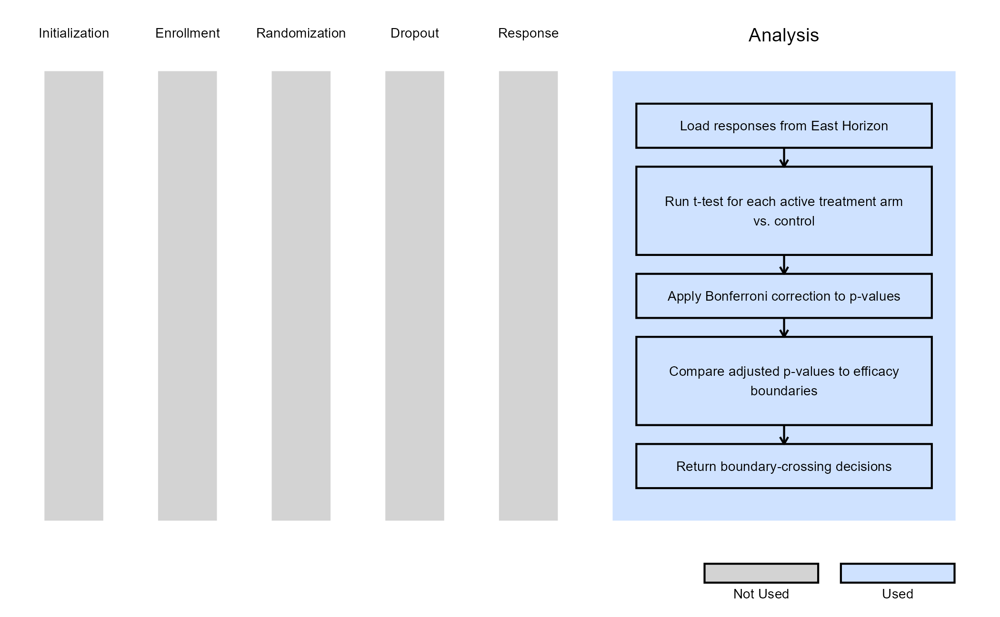
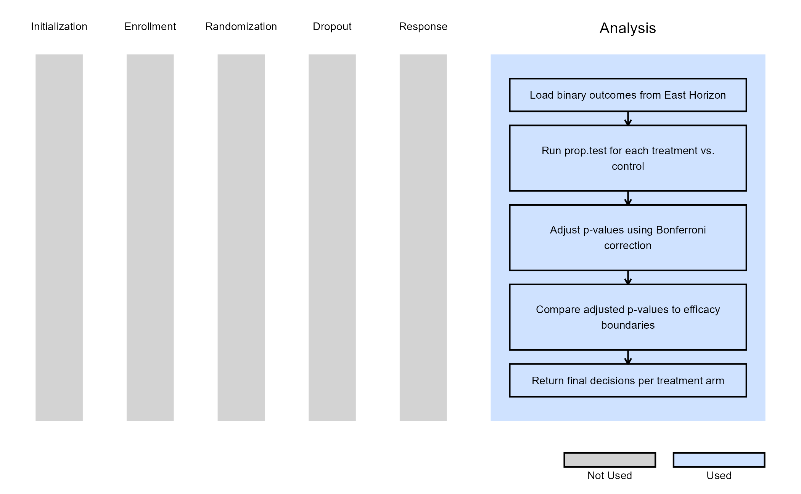

Multiple Arm, Analysis
Gabriel Potvin and Anoop Singh Rawat
October 31, 2025
MultiArmAnalysis.RmdThis example is related to the Integration Point: Analysis. Click the link for setup instructions, variable details, and additional information about this integration point.
- Study objective: Multiple Arm Confirmatory
- Number of endpoints: Single Endpoint
- Endpoint type:
- Continuous Outcome for Example 1
- Binary Outcome for Example 2
- Task: Explore
Note: This example is compatible with both Fixed Sample and Group Sequential statistical designs. The R code automatically detects whether interim look information (LookInfo) is available and adjusts the analysis parameters accordingly.
Introduction
The following examples illustrate how to integrate new analysis capabilities into East Horizon using R functions in the context of multi-arm clinical trials. Each example demonstrates a different type of statistical endpoint (continuous, time-to-event, and binary), using standard R functions and a Bonferroni adjustment to handle multiple comparisons.
In the R directory of this example you will find the following R files:
AnalyzeMultiArmUsingTTestBonferroni.R - Performs pairwise t-tests for continuous endpoints with Bonferroni adjustment.
AnalyzeMultiArmUsingPropTestBonferroni.R - Performs proportion tests for binary endpoints with Bonferroni adjustment.
Example 1 - Using the t.test() Function with Bonferroni
Adjustment (Continuous Outcome)
This example is related to this R file: AnalyzeMultiArmUsingTTestBonferroni.R
This example uses R’s built-in t.test() function to
compare continuous outcomes between each treatment arm and the control
arm. The function computes individual p-values for each comparison,
applies a Bonferroni adjustment to control the family-wise error rate,
and then checks whether any adjusted p-values cross the efficacy
boundaries defined by East Horizon.
At each interim or final analysis, only active arms are tested (based
on IsArmPresent). The analysis is compatible with both
fixed and group sequential designs.
The figure below illustrates where this example fits within the R integration points of Cytel products, accompanied by a flowchart outlining the general steps performed by the R code.

Example 2 - Using the prop.test() Function with
Bonferroni Adjustment (Binary Outcome)
This example is related to this R file: AnalyzeMultiArmUsingPropTestBonferroni.R
This example analyzes binary outcomes using R’s base
prop.test() function. The test compares the proportion of
responders in each treatment arm against the control arm, computes
p-values for each test, and applies Bonferroni correction to account for
multiple arms. Adjusted p-values are compared against efficacy
boundaries to decide whether any arm demonstrates a statistically
significant treatment effect.
The analysis dynamically accounts for dropped arms and adapts to both fixed and group sequential designs.
The figure below illustrates where this example fits within the R integration points of Cytel products, accompanied by a flowchart outlining the general steps performed by the R code.
